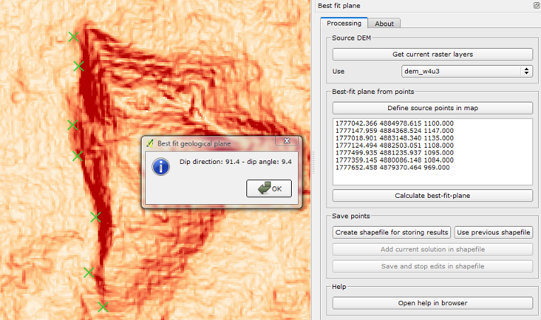
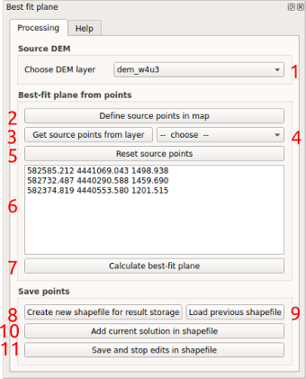

By coupling mapping or remote sensing information with topographic data, this plugin allows to estimate the attitude
of best-fit-plane to a set of points or lines lying on a topographic surface (example in Fig. 1).
This is a common task in geological mapping and analysis.

Fig. 1. Example of estimation of a fault attitude in the western border of Mt. Alpi zone (Southern Italy).
Input data
Elevation information is provided by a Digital Elevation Model (DEM). Points can be digitized by the user directly
on the map canvas or alternatively loaded from a point/line layers.
When the source DEM crs is in polar coordinates (i.e., latitude and longitude) or its vertical distance unit is
different from the horizontal one (e.g., meters for the height and decimal degrees for the horizontal location),
it is crucial to assign to the project a planar CRS (e.g., UTM) with resulting
horizontal and vertical measures expressed in the same distance units (e.g., meters both for horizontal and vertical
distances), in order to avoid incorrect results.
Plugin usage
The user defines the DEM to be used as elevation source, by choosing from the rasters loaded in the project (ref. 1 in Fig. 2).
Afterwards the locations defining the geological plane to be estimated are entered, via digitization of three or more
points in the map canvas (ref. 2), or alternatively by choosing a loaded point/line layer (ref. 5 and then 4).
In the latter case, selected elements will be used for the best-fit-plane calculation. When there is no active selection, all records will be used.
The coordinates of the points defined in the map are added in the list of source points [6].
It is possible to reset the list of points by clicking the Reset all source points button (#3).
Data can also originate from a loaded layer, chosen in the [5] list and then clicking the Get source points from layer.
When finished with the point definition, the best-fit-plane can be calculated by pressing the
Calculate best-fit plane button [7]. A pop-up window should normally display the resulting plane dip direction
and dip angle (see example in Fig. 1).
It is possible to save one or more set of best-fit plane solutions, together with their source points, in a shapefile.
To this purpose, the user can create a new, ad-hoc shapefile with the Create shapefile for storing results button [8].
Computed results can be added to this shapefile with the Add current solution to shapefile button [10],
that opens a window when the user can insert a description of the computed solution (max. of 50 characters allowed).
When completed an analysis session, the results can be saved to the shapefile with the
Save and stop edits in shapefile button [11] and loaded in the QGis project.
In a successive session, the previously created shapefile can be loaded with the Use previous shapefile button
[9] and then new results added with the described commands.

Fig. 2. Screenshot of the module window.
Methodology
The basis of the algorithm is the application of singular value decomposition to derive the eigenvectors of a set of measures.
See, for instance, the discussion in
Best fit plane algorithms why different results?.